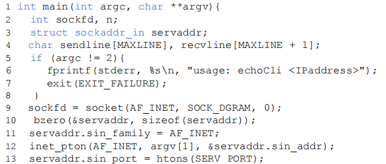
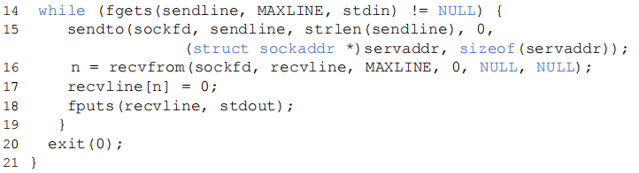
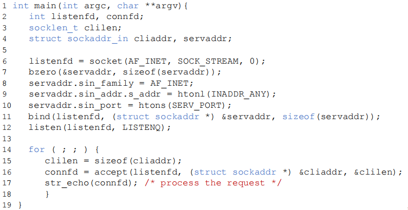

Transport layer
约 12076 个字 56 张图片 预计阅读时间 81 分钟
概述和传输层服务
传输层的位置
- 传输层位于网络层和应用层之间 - 基于网络层提供的服务，向分布式应用程序提供通信服务
- 按照因特网的“端到端”设计原则 - 应用程序只运行在终端上，即不需要为网络设备编写程序
- 站在应用程序的角度 - 传输层应提供进程之间本地通信的抽象：即运行在不同终端上的应用进程仿佛是直接连在一起的
作为应用程序的开发者，看到的就是传输层的内容，更下层的内容对于开发者来说是不可见的
不同终端上的进程间的通信
在TCP/IP网络中，使用套接字(socket)进行通信，这是应用层和传输层的接口，也是应用程序和网络之间的API
传输层提供的服务
- 网络层提供“尽力而为”的服务
- 传输层提供“有所为、有所不为”的服务
- 传输层可以通过差错恢复、重排序等手段提供可靠、按序的交付服务
- 但传输层无法提供延迟保证、带宽保证等服务
因特网传输层提供的服务
- 最低限度的传输服务：
- 将终端-终端的数据交付扩展到进程 - 进程的数据交付
- 报文检错
- 增强服务：
- 可靠数据传输
- 流量控制
- 拥塞控制
- 因特网传输层通过UDP协议和TCP协议，向应用层提供两种不同的传输服务：
- UDP协议：仅提供最低限度的传输服务
- TCP协议：提供基础服务和增强服务
套接字编程
应用程序体系结构
- 传统及主流的是客户-服务器体系结构(C/S)
- 有一台总是在线的主机，运行一个服务器程序(server)，服务器主机具有永久的、众所周知的地址
- 用户终端上运行一个客户程序（client），需要时主动与服务器程序通信，请求服务
- 客户只与服务器通信，客户之间不通信
进程使用端口号来标识自己(主机地址+端口号)
应用编程接口：socket API
- 应用需显式地创建、使用和释放套接字
- 采用客户-服务器模式：
- 客户总是主动发起通信的一方，服务器始终在等待客户的服务请求到来
- 应用可以通过socket API调用两种传输服务:
- 不可靠的数据报服务：由UDP协议实现
- 可靠的字节流服务：由TCP协议实现
套接字传输层协议
- type指明传输层协议
- SOCK_STREAM代表TCP字节流
- SOCK_DGRAM代表UDP数据报
套接字描述符
- Linux系统中程序通过访问套接字描述符来进行套接字通信
- 在套接字描述符上的发送、接收数据的行为可以用文件读写调用完成
- read从描述符fd中读取(接收)长度为返回值的字节数至buf中
- write向描述符fd中写入(发送)buf中长度为返回值的字节数
使用UDP套接字实现回音服务
绑定套接字地址 - bind()
- 用来将服务器本地套接字地址sa与描述符socket_fd绑定
- 客户程序不需要调用bind()，操作系统将为其在1024～5000之间分配一个端口号
关闭套接字 - close()
- 当实参fd为TCP套接字描述符时
- 调用close()会引起本地进程向远程进程发送关闭连接的消息
- 当实参fd为UDP套接字描述符时
- 调用close()会引起为此描述符分配的资源被内核释放
基于UDP的套接字通信流程

UDP代码实现
服务端代码
首先创建socket对象，参数为使用IPv4地址以及使用UDP服务。接着设置服务地址，包括设置IPv4、可以接收来自任何IP地址的信息以及端口，然后将刚刚设置的地址信息与前面创建的socket信息绑定。最后就可以进入循环，在循环中不断的接收客户端发来的信息并且将元信息返回。
客户端代码


同样的，首先创建socket对象，参数为使用IPv4地址以及使用UDP服务。接着设置服务地址信息，包括设置IPv4、设置接收信息的服务器为IPv4地址以及端口信息。最后就可以向服务器发送信息，然后接收信息并且将接收到的信息进行打印。
使用TCP套接字实现回音服务
使用TCP套接字编程时，可将TCP连接想像成一对套接字之间的一条封闭管道
- 发送端TCP将要发送的字节序列从管道的一(套接字)送入
- 接收端TCP从管道的另一端(套接字)取出字节序列
- 在管道中传输的字节不丢失，并保持顺序
服务器使用多个套接字服务客户
- 服务器进程在监听套接字上等待客户的连接请求
- 客户进程创建一个本地套接字，与服务器的监听套接字通信
- 在此过程中，客户TCP向服务器TCP发送连接请求
- 收到连接请求后，服务器进程创建一个临时套接字(称连接套接字)和一个新的服务器进程，与客户进程通信
- 服务器进程回到监听套接字上继续等待
- 此举允许服务器同时服务多个客户
- 客户服务结束后，服务器销毁进程，关闭连接套接字
TCP服务器监听套接字 - listen()
- 将主动套接字转变为被动套接字，进入监听状态
- backlog设定了监听队列长度(也就是最大能够同时支持的连接数)
TCP套接字系统调用 - accept()
- 服务端从已建立连接的队列中出队列一个客户端
- 返回值是用来和客户端交换数据的套接字描述符，需要在通信完毕后调用close关闭
- 返回时客户端的IP地址和端口可在cliaddr中访问
TCP套接字系统调用 - connect()
- 客户端调用connect向服务器发起建立连接的请求
- 服务器的IP地址和端口信息在servaddr中
- 三次握手的过程导致connect的调用是阻塞的
基于TCP的套接字通信流程
TCP代码实现
服务端代码

客户端代码
这两份代码的实现都与UDP的代码实现类似，只是多了connect部分
传输层复用和分用
复用和分用定义
- (发送端)复用:传输层从多个套接字收集数据，交给网络层发送
- (接收端)分用:传输层将从网络层收到的数据，交付给正确的套接字
套接字标识与端口号
- 端口号是套接字标识的一部分：每个套接字在本地关联一个端口号，端口号是一个16比特的数
- 端口号的分类：
- 熟知端口：0~1023，由公共域协议使用
- 注册端口：1024~49151，需要向IANA注册才能使用
- 动态和/或私有端口：49152~65535，一般程序使用
- 报文段中有两个字段携带端口号
- 源端口号：与发送进程关联的本地端口号
- 目的端口号：与接收进程关联的本地端口号
套接字端口号的分配
- 自动分配(通常客户端使用)：创建套接字时不指定端口号，由操作系统从49152~65535中分配
- 使用指定端口号创建套接字(通常服务器使用)：创建套接字时指定端口号，实现公共域协议的服务器应分配众所周知的端口号(0~1023)
UDP分用的方法
UDP套接字使用<IP地址，端口号>二元组进行标识
接收方传输层收到一个UDP报文段后，检查报文段中的目的端口号，将UDP报文段交付到具有该端口号的套接字，是要目的IP地址已目的端口号相同，就会交到同一个套接字，与源IP地址与源端口号无关，源IP地址与源端口号仅用在发送响应报文中
TCP分用的方法
连接套接字需要使用<源IP地址，目的IP地址，源端口号，目的端口号>四元组进行标识
- 一个TCP服务器为了同时服务很多个客户，使用两种套接字
- 监听套接字：服务器平时在监听套接字上等待客户的连接请求，该套接字具有众所周知的端口号
- 连接套接字：服务器在收到客户的连接请求后，创建一个连接套接字，使用临时分配的端口号。同时创建一个新的进程，在该连接套接字上服务该客户
- 每个连接套接字只与一个客户通信(与目的IP地址及目的端口号、源IP地址及源端口号都有关)
小结
- UDP套接字
- 使用<IP地址，端口号>二元组标识UDP套接字
- 服务器使用一个套接字服务所有客户
- TCP套接字
- 使用<源IP地址，目的IP地址，源端口号，目的端口号>四元组标识连接套接字
- 服务器使用一个监听套接字和多个连接套接字服务多个客户，每个连接套接字服务一个客户
无连接传输：UDP
UDP提供的服务
UDP提供的服务：进程到进程之间的报文交付；报文完整性检查(可选)：检测并丢弃出错的报文。
UDP需要实现的功能：复用和分用。报文检错
UDP报文段结构
- UDP报文：报头(携带协议处理需要的信息)、载荷(payload - 携带上层数据)
- 用于复用和分用的字段：源端口号、目的端口号
- 用于检测报文错误的字段：报文总长度、校验和(checksum)
UDP校验和计算

- 计算UDP校验和时，要包括伪头(从IP中获得的信息)、UDP头和数据三个部分
- UDP伪头信息取自IP报头，包括：源IP地址，目的IP地址，UDP的协议号，UDP报文段总长度
- 计算校验和时包含伪头信息，是为了避免由于IP地址错误等造成的误投递
- UDP校验和的使用是可选的，若不计算校验和，该字段填入0
为什么需要UDP
- 应用可以尽可能快地发送报文：①无建立连接的延迟②不限制发送速率（不进行拥塞控制和流量控制）
- 报头开销小
- 协议处理简单
UDP适合的应用
- 容忍丢包但对延迟敏感的应用：如流媒体
- 以单次请求/响应为主的应用：如DNS
- 若应用要求基于UDP进行可靠传输：由应用层实现可靠性
面向连接的传输：TCP
TCP概述
- TCP服务模型：在一对通信的进程之间提供一条理想的字节流管道
- 点对点通信、全双工
- 可靠、有序的字节流：不保留报文边界
需要的机制
- 建立连接：通信双方为本次通信建立数据传输所需的状态(套接字、缓存、变量等)
- 可靠数据传输：流水线式发送，报文段检错，丢失重传
- 流量控制：发送方不会令接收方缓存溢出
TCP报文段结构
重要的TCP选项
- 最大段长度(MSS)
- TCP段中可以携带的最大数据字节数
- 建立连接时，每个主机可声明自己能够接受的MSS，缺省为536字节
- 窗口比例因子(window scale)：
- 建立连接时，双方可以协商一个窗口比例因子
- 实际接收窗口大小 = window size * 2^window scale
- 选择确认(SACK)：
- 最初的TCP协议只使用累积确认
- 改进的TCP协议引入选择确认，允许接收端指出缺失的数据字节
发送序号和确认序号的含义
初始序号的选取: 每个TCP实体维护一个32位计数器，该计数器每4微秒增1，建立连接时从中读取计数器当前值
TCP可靠数据传输
概述
- 基本机制
- 发送端：流水线式发送数据、等待确认、超时重传
- 接收端：进行差错检测，采用累积确认机制
- 乱序段处理：协议没有明确规定
- 接收端不缓存：可以正常工作，处理简单，但效率低
- 接收端缓存：效率高，但处理复杂
一个高度简化的TCP协议
仅考虑可靠传输机制，且数据仅在一个方向上传输
- 接收方
- 确认方式：采用累积确认，仅在正确、按序收到报文段后，更新确认序号；其余情况，重复前一次的确认序号(与GBN类似)
- 失序报文段处理：缓存失序的报文段(与SR类似)
- 发送方
- 发送策略：流水线式发送报文段
- 定时器的使用：仅对最早未确认的报文段使用一个重传定时器(与GBN类似)
- 重发策略：仅在超时后重发最早未确认的报文段(与SR类似，因为接收端缓存了失序的报文段)
TCP发送方要处理的事件
- 收到应用数据
- 创建并发送TCP报文段
- 若当前没有定时器在运行(没有已发送、未确认的报文段)，启动定时器
- 超时
- 重传包含最小序号的、未确认的报文段
- 重启定时器
- 收到ACK
- 如果确认序号大于基序号(已发送未确认的最小序号)
- 推进发送窗口(更新基序号)
- 如果发送窗口中还有未确认的报文段，启动定时器，否则终止定时器
- 如果确认序号大于基序号(已发送未确认的最小序号)
TCP可能的重传场景
TCP为了减少不必要的重传采用的机制
- 只使用一个定时器，避免了超时设置过小时重发大量报文段
- 利用流水式发送和累积确认，可以避免重发某些丢失了ACK的报文段
超时值的设置
若超时值太小，容易产生不必要的重传；若超时值太大，则丢包恢复的时间太长。直观上，超时值应大于RTT，但RTT是变化的。
如何估计RTT？
- RTT是变化的，需要实时测量从发出某个报文段到收到其确认报文段之间经过的时间(称SampleRTT)
- 由于SampleRTT波动很大，更有意义的是计算其平均值(称EstimatedRTT)
- 平均RTT的估算方法(指数加权移动平均)
- EstimatedRTT = (1- α)*EstimatedRTT + α*SampleRTT (典型地，α = 0.125)
- 瞬时RTT和平均RTT有很大的偏差
- 需要在EstimtedRTT 上加一个“安全距离”，作为超时值
- 安全距离的大小与RTT的波动幅度有关
- 估算SampleRTT 与 EstimatedRTT的偏差(称DevRTT)
- DevRTT = (1-β)*DevRTT + β*|SampleRTT-EstimatedRTT| (典型地， β = 0.25)
- 设置重传定时器的超时值 TimeoutInterval = EstimatedRTT + 4*DevRTT
TCP确认的二义性
- TCP确认的二义性问题：重传的TCP报文段使用与原报文段相同的序号,发送端收到确认后 ，无法得知是对哪个报文段进行的确认
- 二义性确认带来的问题：对重传报文段测量的SampleRTT，可能不准确
- 解决方法：忽略有二义性的确认，只对一次发送成功的报文段测量SampleRTT ，并更新EstimtedRTT。当TCP重传一个段时，停止测量SampleRTT
定时器补偿
- 简单忽略重传报文段的问题：重传意味着超时值可能偏小了，需要增大。若简单忽略重传报文段(不更新EstimtedRTT)，则超时值也不会更新，超时设置过小的问题没有解决
- 解决方法：
- 采用定时器补偿策略，发送方每重传一个报文段，就直接将超时值增大一倍(不依赖于RTT的更新)
- 若连续发生超时事件，超时值呈指数增长（至一个设定的上限值）
Karn算法
Karn算法结合使用RTT估计值和定时器补偿策略确定超时值
- 使用EstimatedRTT估计初始的超时值
- 若发生超时，每次重传时对定时器进行补偿，直到成功传输一个报文段为止
- 若收到上层应用数据、或某个报文段没有重传就被确认了，用最近的EstimatedRTT估计超时值
TCP的接收端
- 理论上，接收端只需区分两种情况：
- 收到期待的报文段：发送更新的确认序号
- 其它情况：重复当前的确认序号
- 为减小通信量，TCP允许接收端推迟确认：
- 接收端可以在收到若干个报文段后，发送一个累积确认的报文段
- 推迟确认带来的问题：
- 若延迟太大，会导致不必要的重传
- 推迟确认造成RTT估计不准确
- TCP协议规定：
- 推迟确认的时间最多为500ms
- 接收方至少每隔一个报文段使用正常方式进行确认
TCP接收端的事件和处理
快速重传
- 发送方可利用重复ACK检测报文段丢失：
- 发送方通常连续发送许多报文段
- 若仅有个别报文段丢失，发送方将收到多个重复序号的ACK
- 多数情况下IP按序交付分组，重复ACK极有可能因丢包产生
- TCP协议规定：
- 当发送方收到对同一序号的3次重复确认时，立即重发包含该序号的报文段
- 快速重传：就是在定时器到期前重发丢失的报文段
快速重传算法实现
TCP与一些其他协议的对比
TCP结合了GBN和SR的优点
- 定时器的使用：与GBN类似，只对最早未确认的报文段使用一个定时器
- 超时重传：与SR类似，只重传缺失的数据
TCP在减小定时器开销和重传开销方面要优于GBN和SR！
Crash Recovery
从host crash的恢复是困难的。
当一个主机crash掉的时候，客户端可能有两种状态
- S0 -> 没有数据段(ack)在传输中
- S1 -> 有数据段(ack)在传输中。
一些解决方式
- 当客户端得知崩溃时，只有其存在没有传输到的ack时，才会进行重传
- 如果在崩溃发生的时候，ack已经发出了，但是数据还没有写入到磁盘中，客户端就会收到ack信号并且处于S0状态。(导致LOST问题)
- 如果在崩溃发生的时候，数据写入磁盘已经完成了，但是ack信号还没有发出，客户端就会没有收到ack信号因而处于S1状态。(导致Dup问题)
能否通过总是重传以及使用序列号的方式来避免重复的情况？
取决于能不能向上层询问信息，如果能够向上层询问缓存信息，获得数据段传输的情况，就可以实现。仅仅通过自己本层的服务是无法实现的。
更加笼统的来说，想要从一个N层的crash恢复，一定需要N+1或者更高层的服务提供信息来进行状态保持
TCP流量控制
TCP的接收端 - 接收缓存
- TCP接收端有一个接收缓存：接收端TCP将收到的数据放入接收缓存，应用进程从接收缓存中读数据。但是进入接收缓存的数据不一定被立即取走、取完，如果接收缓存中的数据未及时取走，后续到达的数据可能会因缓存溢出而丢失
- 流量控制：发送端TCP通过调节发送速率，不使接收端缓存溢出
为什么GBN/SR和UDP不需要流量控制
- GBN和SR
- GBN和SR均假设：①正确、按序到达的分组被立即交付给上层②其占用的缓冲区被立即释放
- 发送方根据确认序号即可知道：①哪些分组已被移出接收窗口②接收窗口还可以接受多少分组
- 因此GBN和SR不需要流量控制
- UDP
- 接收端UDP将收到的报文载荷放入接收缓存
- 应用进程每次从接收缓存中读取一个完整的报文载荷
- 当应用进程消费数据不够快时，接收缓存溢出，报文数据丢失，UDP不负责任
- 因此UDP不需要流量控制
TCP的流量控制
- 接收缓存中的可用空间称为接收窗口：RcvWindow = RcvBuffer - [LastByteRcvd -LastByteRead]
- 接收方将RcvWindow放在报头中，向发送方通告接收缓存的可用空间
- 发送方限制未确认的字节数不超过接收窗口的大小，即：LastByteSent-LastByteAcked ≦ RcvWindow
- 特别是，当接收方通告接收窗口为0时，发送方必须停止发送
可能会导致死锁问题
第16步执行完成之后，因为B发送给A的数据丢失了，所以A仍然认为B没有接收窗口，所以一直不会发送数据给B，而B一直接收不到A的数据，就认为A的数据已经全部发送完成了，也不会给A发送数据，此时也就陷入了死锁。
解决方式：非零窗口通告
TCP协议规定：发送方收到“零窗口通告”后，可以发送“零窗口探测”报文段，从而接收方可以发送包含接收窗口的响应报文段。
零窗口探测的实现
- 发送端收到零窗口通告时，启动一个坚持定时器
- 定时器超时后，发送端发送一个零窗口探测报文段(序号为上一个段中最后一个字节的序号)
- 接收端在响应的报文段中通告当前接收窗口的大小
- 若发送端仍收到零窗口通告，重新启动坚持定时器
糊涂窗口综合症
当数据的发送速度很快、而消费速度很慢时，零窗口探测的简单实现带来以下问题：
- 接收方不断发送微小窗口通告
- 发送方不断发送很小的数据分组
- 大量带宽被浪费
解决方案
- 接收方启发式策略
- 发送方启发式策略
接收方启发式策略
接收方通知零窗口后，仅当窗口大小显著增加(窗口大小达到缓存空间的一半或者一个MSS[最大包长度]，取两者的较小值)之后才发送更新的窗口通告
TCP执行该策略的做法
- 当窗口大小不满足以上策略时，推迟发送确认(但最多推迟500ms，且至少每隔一个报文段使用正常方式进行确认)，寄希望于推迟间隔内有更多数据被消费
- 仅当窗口大小满足以上策略时，才通告新的窗口大小
发送方启发式策略
发送方应积聚足够多的数据再发送，以防止发送太短的报文段
发送方应等待多长时间？
- 若等待时间不够，报文段会太短
- 若等待时间过久，应用程序的时延会太长
- 更重要的是，TCP不知道应用程序会不会在最近的将来生成更多的数据
Nagle算法
- 算法实现
- 在新建连接上，当应用数据到来时，组成一个TCP段发送(那怕只有一个字节)
- 在收到确认之前，后续到来的数据放在发送缓存中
- 当数据量达到一个MSS或上一次传输的确认到来(取两者的较小时间)，用一个TCP段将缓存的字节全部发走
- 算法优点
- 适应网络延时、MSS长度及应用速度的各种组合
- 常规情况下不会降低网络的吞吐量
TCP连接管理
两次握手建立连接
不靠谱的网路中会出现的意外(包的延迟与丢失)：
- 包传输延迟变化很大
- 存在重传的报文段
- 存在报文重排序
两次握手失败情况
网路中不同包的到达顺序不是严格的，导致服务端接收包的顺序出错或者收到很久以前的包而出错
解决方式
在包上写序列号，如果收到的包的序列号见过，那么就丢掉这个包
- 问题
- 但是序列号的长度是有限的，很快会重复
- 重新建立连接后序列号又会重新开始，还是会产生二义性
- 解决方式：使用时间，时间的长度会长一些，然后设置包在网络中的存活时间小于一轮时间周期。
- 收到包后，需要判断包的序列号，如果这个包以前见过并且间隔时间小于一轮时间，就丢掉，否则就算是见过也会接收
- 使用包的存活时间(TTL)来实现包的存活时间控制
- 解决crash问题(crash之后包的序号会强行刷新)：使用 time-of-the-day clock，无论是否crash，这个时钟都会增长，然后每一个连接的输出的序列号都根据这个时钟来决定。这个时钟的长度一般会大于32个字节，使用的时候取它的低32字节即可。
- 基于时钟的起始序号选取算法
- 这个时钟每4微秒增长1
- 新建连接时，以本地计数器值得最低32为作为起始序列号
- 使用得字节序号较长(32bit)，回绕时间大于数据报在网络上的寿命时长
- 发包的速度也有限制
- 因为时钟是自主增长的，但是发包中的序列号的增长速度是由发包的速度决定的
- 如果发包的速度过快，那么下一轮发送的起始序列号可能已经在上一轮中用过，并且此时两个包的发送的间隔时间小于一轮时间周期(最快一个tick一个segment)
- 但是发包速度过慢也可能会产生问题
三次握手建立连接
syn信号就是connection request信号，syn数据包中不包含数据
客户端的起始序列号是由客户端的本地时钟决定的，服务器的起始序列号是由服务器的本地时钟决定的，两者之间没有关系
关闭TCP连接
异步释放
一次性全部释放，可能会存在问题
同步释放(四次挥手)
存在的问题(The two army problem)：山谷中有白色方，山谷两侧是蓝色方，蓝色方单打打不过白色方，但是结合就打得过，因而山谷两侧的蓝色方需要联合：
- 蓝色1给蓝色2一个通信兵告知消息
- 蓝色2收到消息后需要让蓝色1知道它知道了
- 蓝色1知道蓝色2知道后需要让蓝色2知道蓝色1知道蓝色2知道了
- ......
这个问题在双边通信中无法解决的(除非面对面通信)
客户/服务器经历的TCP状态序列
安全问题
SYN泛洪攻击
- TCP中实现：
- 服务器在收到SYN段后，发送SYNACK段，分配资源
- 若未收到ACK段，服务器超时后重发SYNACK段
- 服务器等待一段时间(称SYN超时)后丢弃未完成的连接，SYN超时的典型值为30秒~120秒
- SYN泛洪攻击：
- 攻击者采用伪造的源IP地址，向服务器发送大量的SYN段，却不发送ACK段
- 服务器为维护一个巨大的半连接表耗尽资源，导致无法处理正常客户的连接请求，表现为服务器停止服务
一种可能的解决方式：在SYN之后添加随机数，使得最终哈希出的结果的前六位为0，也就是增加发送方发送SYN请求的代价，但是服务器很容易验证
TCP端口扫描
扫描目标机器的不同端口，看目标机器会不会会ACK，如果回了(SYNACK说明目标端口上有服务在运行，RST说明目标端口上没有服务在运行，什么都没收到说明有防火墙)就说明目标机器的该端口提供服务，然后根据对方服务的端口来判断对方提供的服务类型
理解网络拥塞
- 起因：大量分组短时间内进入网络，超出网络的处理能力
- 表现：分组延迟增大，网络吞吐量下降，甚至降为0
- 措施：减少分组进入网络(拥塞控制)
流量控制与拥塞控制的异同
- 流量控制：限制发送速度，使不超过接收端的处理能力
- 拥塞控制：限制发送速度，使不超过网络的处理能力
网络拥塞的后果
会导致丢包(由路由器缓存溢出造成)以及分组延迟增大(链路接近满载造成)，此时大量网络资源用于重传丢失的分组、(不必要)延迟过大的分组以及最终被丢弃的分组，最终导致进入网络的负载很重，网络吞吐量却很低
拥塞控制的常用方法
- 网络辅助的拥塞控制
- 路由器向端系统提供显式的反馈，例如：
- 设置拥塞指示比特
- 给出发送速率指示
- ATM、X.25采用此类方法
- 路由器向端系统提供显式的反馈，例如：
- 端到端拥塞控制
- 网络层不向端系统提供反馈
- 端系统通过观察丢包和延迟，自行推断拥塞的发生
- TCP采用此类方法
TCP拥塞控制
TCP使用端到端拥塞控制机制：发送方根据自己感知的网络拥塞程度，限制其发送速率
如何感知
- 发送方利用丢包事件感知拥塞：
- 拥塞造成丢包和分组延迟增大
- 无论是丢包还是分组延迟过大，对于发送端来说都是丢包了
- 丢包事件包括：
- 重传定时器超时
- 发送端收到3个重复的ACK
如何限制发送速度
发送方使用拥塞窗口cwnd限制已发送未确认的数据量
cwnd随发送方感知的网络拥塞程度而变化
调整策略AIMD
- 乘性减（Multiplicative Decrease）
- 发送方检测到丢包后，将cwnd的大小减半(但不能小于一个MSS)
- 目的：迅速减小发送速率，缓解拥塞
- 加性增（Additive Increase）
- 若无丢包，每经过一个RTT，将cwnd增大一个MSS，直到检测到丢包
- 目的：缓慢增大发送速率，避免振荡
TCP慢启动
- 采用“加性增”增大发送窗口，太慢！
- 在新建连接上，令cwnd = 1 MSS，起始速度= MSS/RTT
- 然而，网络中的可用带宽可能远大于MSS/RTT
- 慢启动的基本思想：
- 在新建连接上指数增大cwnd，直至检测到丢包(此时终止慢启动)
- 希望迅速增大cwnd至可用的发送速度
慢启动具体实施
- 慢启动的策略：
- 每经过一个RTT，将cwnd加倍
- 慢启动的具体实施：
- 每收到一个ACK段，cwnd增加一个MSS
- 只要发送窗口允许，发送端可以立即发送下一个报文段
- 特点：
- 以一个很低的速率开始，按指数增大发送速率
区分不同的丢包事件
- 超时：说明网络交付能力很差(更严重的情况)
- 设置门限 =cwnd/2
- cwnd=1MSS
- 使用慢启动增大cwnd至门限
- 使用AIMD调节cwnd
- 收到3个重复的ACK：说明网络仍有一定的交付能力
- 将cwnd降至一半
- 使用AIMD调节cwnd
TCP拥塞控制的实现
- 发送方维护变量ssthresh
- 发生丢包时，ssthresh = cwnd/2
- ssthresh是从慢启动转为拥塞避免的分水岭：
- cwnd低于门限时，执行慢启动
- cwnd高于门限：执行拥塞避免
- 拥塞避免阶段，拥塞窗口线性增长：
- 每当收到ACK， cwnd = cwnd + MSS*(MSS/cwnd) [也就是说，只有收到所有的包才会增加一个MSS，是缓慢增加的]
- 检测到3个重复的ACK后：
- TCP Reno实现： cwnd= ssthresh+3，线性增长(加3是实现细节，可以不管)
- TCP Tahoe实现：cwnd=1 MSS，慢启动
TCP发送端的事件与动作
TCP拥塞控制状态机
无线传输中的问题
无线传输中就算不拥塞也会有丢包问题的产生(因为传输错误而丢包)，此时的指示结果就不准确了，此时的错误判断会降低网络的利用率
解决方式：为了在无线网络中也能正常工作,拥塞控制算法观察到的丢包只能是那些因带宽不足造成的丢包,而不能把由于传输错误造成的丢包也算在内。这个问题的一种解决方案是通过使用无线链路上的重传机制把无线链路的丢包掩盖起来。例如,802.11使用停-等式协议来传递每个帧,在向上层报告丢包之前,如果需要会进行多次重传。在正常情况下,每个数据包的交付对高层是不可见的,尽管可能曾经发生过瞬间的传输错误。
图中显示了一条由有线和无线链路组成的路径,传输层采用了屏蔽策略。有两个方面需要注意。首先,发送端并不一定要知道该路径包括一条无线链路,因为它所能看到的只是与它连接的有线链路。Intemet上的路径是异构的,而且不存在一种通用的方法用来告知发送端路经由什么链路组成。这样的现状加深了拥塞控制问题的复杂性,因为没有简单的方法使得无线链路采用一个协议而有线链路采用另一个协议。
TCP性能分析
一个长期存活的TCP连接，平均吞吐量是多少？
- 忽略慢启动阶段（该阶段时间很短），只考虑拥塞避免阶段
- 令W=发生丢包时的拥塞窗口，此时有：throughput = W/RTT
- 发生丢包后调整 cwnd=W/2，此时有：throughput = W/2RTT
- 假设在TCP连接的生命期内，RTT 和 W几乎不变，有：Average throughout = 0.75 W/RTT
TCP的公平性
目标：如果K条TCP连接共享某条带宽为R的瓶颈链路，每条连接应具有平均速度R/K
- 考虑两条竞争的连接（各种参数相同）共享带宽为R的链路:
- 加性增：连接1和连接2按照相同的速率增大各自的拥塞窗口，得到斜率为1的直线
- 乘性减：连接1和连接2将各自的拥塞窗口减半
- 更复杂的情形
- 若相互竞争的TCP连接具有不同的参数（RTT、MSS等），不能保证公平性
- 若应用（如web）可以建立多条并行TCP连接，不能保证带宽在应用之间公平分配
一道思考题
Consider the following figure. Assuming TCP Reno is the protocol experiencing the behavior, answer the following questions. In all cases, you should provide a short discussion justifying your answer.
(1) Identify the intervals of time when TCP slow start is operating.
(2) Identify the intervals of time when TCP congestion avoidance is operating.
(3) After the 16th transmission round, is segment loss detected by a triple duplicate ACK or by a timeout?
(4) After the 22nd transmission round, is segment loss detected by a triple duplicate ACK or by a timeout?
(5) What is the initial value of Threshold at the first transmission round?
(6) What is the value of Threshold at the 18th transmission round?
(7) What is the value of Threshold at the 24th transmission round?
(8) Assuming a packet loss is detected after the 26th round by the receipt of a triple duplicate ACK, what will be the values of the cwnd and Threshold?
(9) Suppose TCP Tahoe is used (instead of TCP Reno), and assume that triple duplicate ACKs are received at the 16th round. What are the Threshold and cwnd at the 19th round?
答案与解析
(1) 慢启动部分 cwnd 是以指数形式增长的，所以答案是 [1, 6] 以及 [23, 26]
(2) 拥塞避免部分 cwnd 是以线性形式增长的，所以答案是 [6, 16] 以及 [17, 22]
(3) 在16轮后，cwnd 的大小下降了一半，并且采用的是 TCP Reno，所以是 a triple deplicate ACK
(4) 在22轮后，cwnd 的大小直接下降至1，所以是 a time out
(5) 第一轮中，cwnd 首先以指数增长的方式增长到32，然后进入线性增长阶段，所以第一轮中的 threshold 是32
(6) 第18轮中的 Threshold，其实就是第16轮之后的 Threshold，在第16轮之后，因为连续收到了3个重复的 ACK 导致 Threshold 减半，所以答案是32/2=16
(7) 第24轮中的 Threshold，其实就是第22轮之后的 Threshold，在第2轮之后，因为丢包导致 Threshold 减半，所以答案是(21+5)/2=13
(8) 如果在第 26 轮之后发生了连续收到3个重复的 ACK 的异常，根据 TCP Reno，这时的 cwnd 和 Threshold 都会减半，所以此时这两个变量的值都是(1*2*2*2)/2=4
(9) 要知道第19轮的情况，首先需要知道第17轮的情况，第16轮之后发生了连续收到3个重复的ACK包的异常，并且此时使用的是TCP Tahoe，所以此时Threshold 都会减半，并且 cwnd 会减小到1，也就是说第17轮的时候，cwnd = 1 并且 Threshold = 42/2 = 21。接下来进入指数增长阶段，所以第19轮时候的情况是这样的cwnd = 1*2*2 = 4, Threshold = 21
拥塞控制的发展
TCP CUBIC
经典TCP拥塞控制的性能问题
TCP Reno线性增大拥塞窗口，探测当前可用网络带宽，即每经过一个RTT，拥塞窗口增加一个MSS；当端到端时延带宽乘积（BDP）较大时，拥塞窗口增长过慢，导致信道无法满载
BIC算法对满载窗口进行二分查找
- 如发生丢包时窗口大小是W1，为保持满载而不丢包，满载窗口应小于W1
- 如检测到丢包并将窗口乘性减小为W2 ，则满载窗口应大于W2
- 窗口更新受ACK时钟驱动，即以RTT为更新间隔时间
- 在ACK时钟的驱动下，将拥塞窗口置为(W1 + W2)/2(新的W2值)，不断逼近满载窗口
- 最大探查：如窗口再次达到W1而没有丢包，说明满载窗口大于W1 ，则以逼近W1的镜像过程增大拥塞窗口
BIC存在带宽不公平性问题
BIC以ACK时钟驱动拥塞窗口的更新，RTT较短的连接会更快到达满载窗口，占据更多的带宽，产生不公平性问题
TCP CUBIC
CUBIC将BIC算法连续化，用三次函数拟合BIC算法曲线，并且拥塞窗口成为距上次丢包的时间t的函数，t取值位于两次丢包之间，不再根据RTT间隔来确定调整窗口的时机，避免了RTT不公平问题
Google BBR
瓶颈链路带宽BtlBw，决定了端到端路径上的最大数据投递速率。拥塞窗口大于BtlBw时，瓶颈链路处会形成排队，导致RTT延长(直至超时)
先前学的TCP Reno是从开始丢包的时候才开始处理的，相对开始处理时间较晚，实际上可以早一些开始处理。
BBR
- 瓶颈链路带宽BtlBw：不会引起路由器缓存排队的最大发送速率
- RTprop：往返时间
- BDP=BtlBw x RTprop
- 经典拥塞控制状态机以丢包事件为驱动，探测阶段将瓶颈链路上的缓冲区填满直至丢包，并以此为依据判断是否进行被动的乘性减小
- BBR试图测量图中左侧优化点的BtlBw，尽量将cwnd收敛到实际BtlBw，从而避免出现丢包，属于主动探测
优化点的近似观测
用过去10秒内的最小RTT(min RTT)和最大投递率(max BW)，分别近似RTprop和BtlBw，并依据这两个值估算当前BDP
从图中可以看出，最小RTT(最低延迟测量需要保证链路队列为空)和最大投递率(测量最大带宽需要把瓶颈链路填满)两个值无法同时被测出
BDP检测
- 启动阶段(START_UP)
- 当连接建立时，类似TCP的慢启动，指数增加发送速率，尽可能快地占满管道
- 若经过三次发现投递率不再增长，说明已达到BtlBw，瓶颈链路处分组已开始排队(事实上此时占的是三倍BDP)
- 排空阶段(DRAIN)
- 指数降低发送速率（相当于是startup的逆过程），将多占的两倍buffer慢慢排空
- 指数降低发送速率（相当于是startup的逆过程），将多占的两倍buffer慢慢排空
- 瓶颈带宽探测(PROBE_BW)
- 进入稳定状态后, 先在一个RTT内增加发送速率，探测最大带宽
- 如果RTT没有变化，再减小发送速率，排空前一个RTT多发出来的包
- 后面6个周期使用更新后的估计带宽发送
- 时延探测(PROBE_RTT)
- 测得的RTprop作为基准，用以判断带宽检测阶段瓶颈链路中是否发生排队
- 每过10秒，如果估计的RTprop不变，就进入RTprop探测阶段，cwnd固定为4个包
BBR状态机
Data Center TCP
数据中心的通信模式
Partition/Aggregate：Aggregator将上层应用任务划分给下层的worker执行
数据中心流量特点
- 根据流量大小可分为时延敏感的短流(50KB-1MB)和吞吐敏感的长流(1MB-50MB)
- 还存在大量突发流量(时间<1s、大小<2KB)
数据中心的性能问题
- Incast
- 在一个很短的时间内，大量流量同时到达交换机的一个端口，导致缓冲区被占满，最终导致丢包
- 在并发流量很大的情况下，即使每条流的包很小，也会产生Incast问题
- Queue Buildup
- 长流和短流同时通过交换机的同一个端口时，由于长流占用较多的缓冲区空间，导致短流延迟增大，甚至丢包
- Buffer Pressure
- 交换机的不同端口通常共享同一块缓冲区，即使长流和短流通过不同的端口，短流通过的端口也会出现缓冲区不足的问题
数据中心传输层协议要求
- 容忍高突发流量
- 低时延
- 高吞吐
DCTCP核心思想
- 根据网络拥塞程度精细地减小发送窗口：一旦发现拥塞，发送窗口减至原窗口的(1-α/2)， α反映了拥塞程度，而TCP中α总为1
- 根据交换机队列的瞬时长度标记ECN(explicit congestion notification)，使用显式的拥塞反馈能够更好地控制突发流量
优点
- 容忍高突发流量
- DCTCP能将队列长度稳定地维持在一个很低的水平
- 采用激进的标记策略
- 低时延
- 高吞吐
- DCTCP根据拥塞程度精确调节窗口
DCCP
UDP 没有拥塞控制机制，但是又想要使用 UDP，所以就有了DCCP = UDP + 拥塞控制
传输层协议的发展
MPTCP
解决同时使用多个网络接口来实现多路径传输的问题(比如手机同时使用WIFI和流量)
优势
- 多径带宽聚合
- 提升传输的可靠性
- 支持链路的平滑切换
位置
MPTCP位于套接字和TCP之间：应用程序通过套接字调用MPTCP，MPTCP向应用程序提供单条连接的抽象，因而对应用层透明。MPTCP连接是一个或多个子流的集合。
MPTCP连接管理
连接建立：首先初始化一条MPTCP连接(与建立常规TCP连接的过程相似)，然后将MPTCP的其它子流附加到已经存在的MPTCP连接上。
MPTCP的数据调度
在多路径传输中，发送端将属于同一个数据流的数据包调度到不同的路径上传输，由于不同路径的差异，这些数据包往往无法按照发送顺序到达接收端。乱序到达的数据包需暂存在接收缓存中，直到接收缓中的数据包能够按序交付给上层应用，这既影响了数据传输的实时性，又影响了网络的吞吐量。MPTCP根据拥塞窗口大小及路径延迟，将数据按比例分配给各个子流，尽力保证数据包按序到达接收端，降低数据乱序到达对网络性能产生的不利影响。
MPTCP的拥塞控制
目标
- 提升吞吐量：多路径TCP连接的各个子流获得的总吞吐量，不应低于其最优路径上单路径TCP连接的吞吐量
- 公平性：多路径TCP连接在同一网络瓶颈处的多个子流，不能过多地侵占其它单路径TCP连接的带宽
- 均衡拥塞：多路径TCP连接应能在满足前两个准则的情况下，实现各个子流之间的负载均衡，尽可能将拥塞路径上的流量迁移到较好的路径上
QUIC
TCP存在的问题
TCP在操作系统内核中实现，应用无法对TCP进行修改，而操作系统的更新往往跟不上应用的需求和节奏，并且TCP体系握手时时延很大，而目前对低时延的要求越来越高。而且，TCP多流复用存在队头阻塞问题(TCP传输需要有序性，一旦出现丢包，后面的数据需要等丢失的包重传完成才能使用)。
QUIC在网络体系结构中的位置
QUIC实现在用户态中，底层基于UDP实现。QUIC与应用的联系更加紧密，可以频繁地更新。
QUIC包格式
- 连接标识符(Connection ID)：用于对连接进行表示和识别
- 包号(Packet Number)：单调递增。即同一个连接中，每个QUIC包的包号都不一样
QUIC底层使用UDP进行传输(QUIC包作为UDP地数据载荷)，IANA（互联网数字分配机构）建议QUIC使用UDP的443端口
连接建立时延优化
优势
- 明确的包序号和更精确的RTT(后者是由前者决定的)
- IP地址/端口切换无需重新建立连接(QUIC使用Connection ID来表示每个连接，IP地址或端口的变化不影响对原有连接的识别)
- 由传输层对连接的切换进行管理
- 无队头阻塞的多流复用(在单个连接中，建立相互独立的多个QUIC流，某个流的数据包丢失不影响其它流的数据交付，可以减少不必要的等待)
- QUIC易于部署和更新(整个QUIC包被加密传输，QUIC在用户态实现)